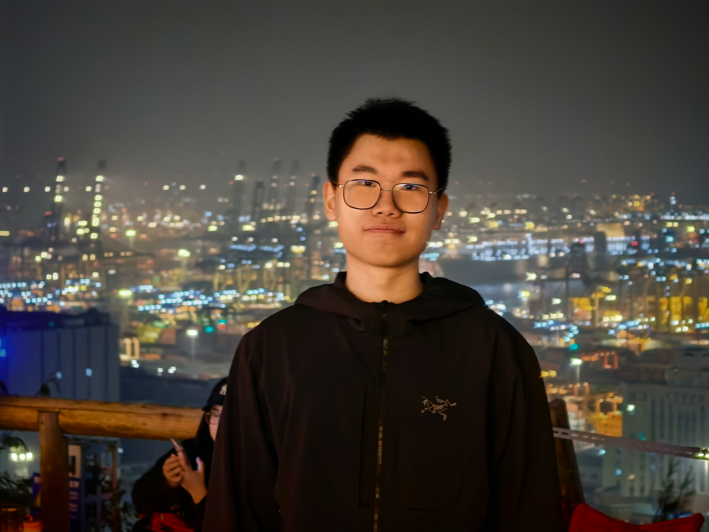

付迦叶 in Chinese · M.Sc. Student (second year)
School of Electronic and Computer Engineering
Peking University

付迦叶 in Chinese · M.Sc. Student (second year)
School of Electronic and Computer Engineering
Peking University
I am a second-year M.Sc. student at the School of Electronic and Computer Engineering, Peking University. I am fortunate to be co-supervised by Prof. Siwei Ma (IEEE Fellow) of the Video Coding Lab and Prof. Jian Zhang of the VILLA Lab. I received my B.Eng. in 2024 from Beijing University of Technology (joint program with University College Dublin), advised by Prof. Jin Wang.
Beyond these three directions, I am also broadly interested in VLM distillation & acceleration, video generation, and avatar. If you are interested in collaborating, please feel free to reach out.
* Equal contribution. † Corresponding author.
50+ proposals contributed to JVET (H.266/VVC successor, ECM) and AVS. Selected below; Adopted marks those integrated into reference software.
Email: jyfu@stu.pku.edu.cn
GitHub: @jyfu-vcl
LinkedIn: jiaye-fu
WeChat: QR Code